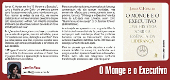
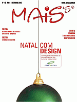

James C. Hunter, no livro "O Monge e o Executivo", conta a história de John Daily - um executivo que se sente fracassar como chefe, como marido e como pai. Para retomar as rédeas de sua vida, ele resolve participar de um retiro num mosteiro beneditino dirigido pelo frade Leonard Hoffman, "um influente empresário americano que abandonou tudo em busca de um novo sentido para a sua vida".
As lições sobre liderança tem como base o conceito de que a esta não é poder, mas sim autoridade, que é "conquistada com amor, dedicação e sacrifício". Para que uma pessoa seja líder, é preciso respeitar seus liderados, agir com responsabilidade e ter critério em suas decisões.
O Monge e o Executivo passou mais de 40 semanas na topo da lista dos livros mais vendidos no Brasil. Sua linguagem é fácil e a apresentação de seus conceitos se dá de forma muito didática.
Para os estudiosos do tema, os conceitos de liderança apresentados não são grandes novidades, mas servem de reflexão para o comportamento junto ao próximo, tornando "O Monge e o Executivo" um dos livros de auto-ajuda mais cultuados, assim como "Quem mexeu no meu queijo", do Dr. Spencer Johnson (Editora Record).
A auto-ajuda se apresenta como o grande filão da indústria dos livros e dá sinais de que irá permanecer no topo por muito mais tempo, afinal, "os problemas humanos sempre se transformam", como cita Anderson Cavalcanti, da Editora Gente - 260 títulos em catálogo, sendo 140 de auto-ajuda.
Para as pessoas que estão dispostas a mudar a maneira de lidar com sua equipe, sua família, seus amigos, este livro apresenta boas idéias e discussões. Porém, livros não são milagrosos: nenhuma transformação acontecerá, caso você não queira!